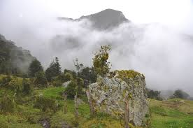
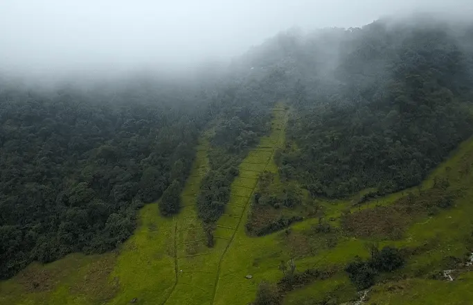

Tunja - Ecosistema y Biodiversidad
Climatología
Según la clasificación de Köppen, Tunja posee un clima de tipo templado ecuatorial Csbi: templado y frío de alta montaña. Al igual que todas las regiones de la Zona Intertropical, el clima está influenciado principalmente por la altitud, las precipitaciones (lluvias) y las corrientes oceánicas, que causan leves variaciones de temperatura, siendo las más significativas las diferencias entre el día y la noche.
La temperatura promedio anual es de 13,2 °C y la presión barométrica es de 1024 hPa.
Biodiversidad
Tunja, la capital de Boyacá en Colombia, es una región rica en biodiversidad. Está situada en una zona de transición entre los Andes y los valles interandinos, lo que crea una variedad de ecosistemas.
En Tunja, puedes encontrar desde páramos hasta bosques de niebla, lo que favorece la presencia de diversas especies de flora y fauna.
Ecosistemas
Bosques de niebla: Estos bosques se encuentran en zonas montañosas y son ricos en biodiversidad, con una gran variedad de plantas y animales, incluidos colibríes y mariposas.
Páramo: Ubicado en altitudes elevadas, es hogar de especies adaptadas al frío, como frailejones y diversas aves.
Zonas de cultivo: La agricultura es una actividad importante, con cultivos como papa, maíz y hortalizas, que coexisten con ecosistemas naturales.

Ríos y humedales: Los cuerpos de agua en la región son vitales para la fauna acuática y para el abastecimiento de agua en las comunidades.
Sabana: En áreas más bajas, se encuentran ecosistemas de sabana con vegetación herbácea y arbustiva.
